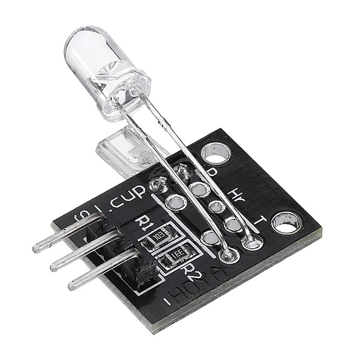
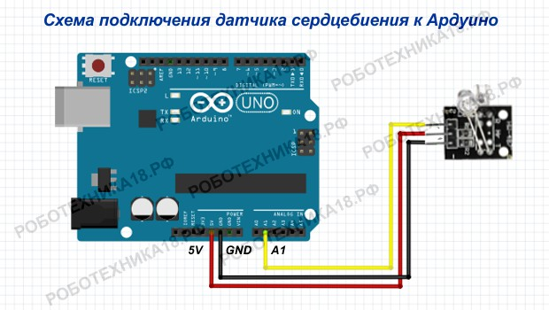

Фотографии и информация

Информация:
- Категория: Датчики
- Код №1: KY-039
- Код №2: (SP0005)
- Дата добавления: 25 Октября, 2020
- Краткое описание:
Датчик Arduino KY-039 служит для измерения пульса (сердцебиения) на пальце. Данный сенсор реагирует на изменение прозрачности пальца для инфракрасного излучения от светодиода при колебаниях кровяного давления. "KY-039" состоит из фототранзистора и инфракрасного светодиода. Инфракрасное излучение светодиода поступает на фототранзистор сквозь палец. При изменении кровяного давления в капиллярах пальца — меняется сопротивление фототранзистора.
Схема подключения
Код для подключения
double alpha = 0.75;
int period = 100;
double change = 0.0;
double minval = 0.0;
void setup() {
Serial.begin(9600);
pinMode(A1, INPUT);
}
void loop() {
static double oldValue = 0;
static double oldChange = 0;
int rawValue = analogRead(A1);
double value = alpha * oldValue + (1 - alpha) * rawValue;
Serial.print (rawValue);
Serial.print (",");
Serial.println (value);
oldValue = value;
delay(period);
}